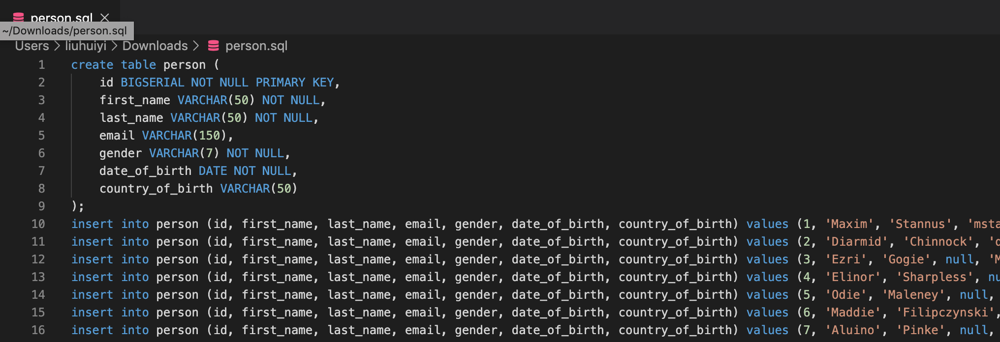

PostgreSQL
What is a Database
- Store
- Manipulate
- Retrieve
SQL and Relational
What is PostgreSQL
- Postgres is the database
- Structured Query Language
SQL is a programming language
- SELECT first_name(COLUMN NAME) FROM person(TABLE NAME)
- Manage data held in a relational database
- Easy to learn
- Very powerful
- 1974
- Used all over the internet
How data is stored
- Stores in tables
- Columns
- Rows
Setup
Download Postgres (MAC OS)
Postgres.app Additional Releases
GUI Client vs Terminal/CMD Client
- Connecting to DB server
- Connect using client
- GUI Client
- DataGrip (Paid application)
- Postico (Free application)
- Terminal / CMD
- Application
- GUI Client
Set PSQL (MAC OS)
- brew cask install iterm2 (Not must required, coule use Terminal.app instead)
1
2
3* cd ~
* vi .bash_profile
* export PATH=$PATH:/Applications/Postgres.app/Contents/Versions/12/bin
Creating Database
Creating a database
1 | CREATE DATABASE test; |
Connecting to database
- Method 1
- psql -h localhost -p 5432 -U username database_name
- Method 2
- psql
- \l
- \c test
A very dangerous command
1 | DROP DATABASE test; |
Creating Tables
Create Table Syntax & Datatypes
1 | CREATE TABLE table_name ( |
1 | CREATE TABLE person ( |
Create Table without Constraints
1 | CREATE TABLE person ( |
1 | \d |

1 | \d person |
Create Table with Constraints
1 | CREATE TABLE person ( |

1 | \d person |
Inserting & Querying Data
How to insert
- How to insert records into tables
1
2
3
4
5
6INSERT INTO person (
first_name,
last_name,
gender,
date_of_birth)
VALUES ('Anne', 'Smith', 'FEMALE', DATE '1988-01-09');
Inserting Data
1 | INSERT INTO person ( |

Retrieving Data
1 | SELECT * FROM person; |
Adding One Thousand Records
- Generate 1000 records from Mockaroo
1
2\i /Users/liuhuiyi/downloads/person.sql
SELECT * FROM person
Sorting Data
1 | SELECT * FROM person ORDER BY country_of_birth; |

Distinct keyword
1 | SELECT country_of_birth FROM person ORDER BY country_of_birth ASC; |
1 | SELECT DISTINCT country_of_birth FROM person ORDER BY country_of_birth ASC; |
Filtering Data
Where Clause & And
1 | SELECT * FROM person WHERE gender = 'Female'; |
Comparison Operators
1 | = equal |
Limit, Offset & Fetch
1 | SELECT * FROM person LIMIT 5; |
In
1 | SELECT * FROM person |
Between
1 | SELECT * FROM person |
LIKE/ILIKE
1 | SELECT * FROM person |
1 | SELECT * FROM person |
Grouping Data
Group By
1 | SELECT country_of_birth, COUNT(*) FROM person |
Having
1 | SELECT country_of_birth, COUNT(*) FROM person |
Creating New Table
1 | \i actual path for car.sql |
Min Max Avg
1 | SELECT MAX(price) FROM car; |
Sum
1 | SELECT SUM(price) FROM car; |
Operators
The Basics of Arithmetic Operators
1 | + |
Arithmetic Operations On Tables
1 | SELECT * FROM car; |
Aliases
1 | SELECT id, make, model, price, |
Handling Nulls
Coalesce
1 | SELECT COALESCE(1); |
1 | SELECT email FROM person; |
Division By Zero with NULLIF
1 | SELECT 10 / 0; |
Working with Dates
Timestamps & Datea
1 | SELECT NOW(); |
Adding and Subtracting Dates With Interval
1 | SELECT NOW() - INTERVAL '1 YEAR'; |
Extracting Fields From Timestamp
1 | SELECT NOW(); |
Age Function
1 | SELECT first_name, last_name, gender, country_of_birth, date_of_birth, |
Understanding PostgresSQL Constraints
What are primary keys
PRIMARY KEY (PK) – Uniquely identify a record in tables
Working With Primary Keys
1 | insert into person (id, first_name, last_name, email, gender, date_of_birth, country_of_birth) values (1, 'Maxim', 'Stannus', 'mstannus0@twitter.com', 'Male', '2020-02-11', 'China'); |
Adding Primary Key Constraint
1 | ALTER TABLE person ADD PRIMARY KEY (id); |
Unique Constraints
1 | SELECT email, count(*) FROM person GROUP BY email; |
Check Constraints
1 | SELECT * FROM person; |
DELETE FROM person;
SELECT * FROM person;
\i /Users/*****/downloads/person.
DELETE FROM person WHERE id = 2;
SELECT * FROM person;
DELETE FROM person WHERE gender = ‘Female’ AND country_of_birth = ‘Nigeria’;
SELECT * FROM person WHERE gender = ‘Female’ AND country_of_birth = ‘Nigeria’;
SELECT * FROM person WHERE gender = ‘Male’ AND country_of_birth = ‘Nigeria’;
DELETE FROM person WHERE gender = ‘Male’;
SELECT * FROM person;
1 |
|
UPDATE person SET email = ‘ezri@gmail.com’ WHERE id = 3;
UPDATE person SET first_name = ‘Ezri’, email = ‘ezri@gmail.com’ WHERE id = 3;
SELECT * FROM person WHERE id = 3;
1 |
|
SELECT * FROM person WHERE id = 7;
INSERT INTO person (id, first_name, last_name, gender, date_of_birth, country_of_birth)
VALUES (7, ‘Aluino’, ‘Pinke’, ‘Male’, DATE ‘2020-02-14’, ‘Zimbabwe’);
INSERT INTO person (id, first_name, last_name, gender, date_of_birth, country_of_birth)
VALUES (7, ‘Aluino’, ‘Pinke’, ‘Male’, DATE ‘2020-02-14’, ‘Zimbabwe’)
ON CONFLICT (id) DO NOTHING;
INSERT INTO person (id, first_name, last_name, gender, date_of_birth, country_of_birth)
VALUES (1001, ‘Aluino’, ‘Pinke’, ‘Male’, DATE ‘2020-02-14’, ‘Zimbabwe’)
ON CONFLICT (email) DO NOTHING;
INSERT INTO person (id, first_name, last_name, gender, date_of_birth, country_of_birth)
VALUES (7, ‘Aluino’, ‘Pinke’, ‘Male’, DATE ‘2020-02-14’, ‘Zimbabwe’)
ON CONFLICT (first_name) DO NOTHING;
1 |
|
SELECT * FROM person WHERE id = 7;
INSERT INTO person (id, first_name, last_name, gender, date_of_birth, country_of_birth)
VALUES (7, ‘Aluino’, ‘Pinke’, ‘Male’, DATE ‘2020-02-14’, ‘Zimbabwe’)
ON CONFLICT (id) DO NOTHING;
INSERT INTO person (id, first_name, last_name, gender, email, date_of_birth, country_of_birth)
VALUES (7, ‘Aluino’, ‘Pinke’, ‘Male’, ‘aluino@gmail.com.ca’, DATE ‘2020-02-14’, ‘Zimbabwe’)
ON CONFLICT (id) DO UPDATE SET email = EXCLUDED.email;
SELECT * FROM person WHERE id = 7;
INSERT INTO person (id, first_name, last_name, gender, email, date_of_birth, country_of_birth)
VALUES (7, ‘Aluinoo’, ‘Pinkee’, ‘Male’, ‘aluino@gmail.com.ca’, DATE ‘2020-02-14’, ‘Zimbabwe’)
ON CONFLICT (id) DO UPDATE SET email = EXCLUDED.email, last_name = EXCLUDED.last_name, first_name = EXCLUDED.first_name;
SELECT * FROM person WHERE id = 7;
1 |
|
FOREIGN KEY & JOINS
1 |
|
create table car (
id BIGSERIAL NOT NULL PRIMARY KEY,
make VARCHAR(100) NOT NULL,
model VARCHAR(100) NOT NULL,
price NUMERIC(50) NOT NULL
);
create table person (
id BIGSERIAL NOT NULL PRIMARY KEY,
first_name VARCHAR(50) NOT NULL,
last_name VARCHAR(50) NOT NULL,
email VARCHAR(150),
gender VARCHAR(7) NOT NULL,
date_of_birth DATE NOT NULL,
country_of_birth VARCHAR(50) NOT NULL,
car_id BIGINT REFERENCES car (id),
UNIQUE(car_id)
);
insert into person (first_name, last_name, email, gender, date_of_birth, country_of_birth) values (‘Diarmid’, ‘Chinnock’, ‘dchinnock1@harvard.edu’, ‘Male’, ‘2019-12-02’, ‘Russia’);
insert into person (first_name, last_name, email, gender, date_of_birth, country_of_birth) values (‘Ezri’, ‘Gogie’, null, ‘Male’, ‘2019-11-20’, ‘Argentina’);
insert into person (first_name, last_name, email, gender, date_of_birth, country_of_birth) values (‘Elinor’, ‘Sharpless’, null, ‘Female’, ‘2019-12-19’, ‘Bosnia and Herzegovina’);
insert into car (id, make, model, price) values (1, ‘Mitsubishi’, ‘Galant’, ‘17016.37’);
insert into car (id, make, model, price) values (2, ‘Volkswagen’, ‘GTI’, ‘41346.99’);
1 |
|
UPDATE person SET car_id = 1 WHERE id = 1;
SELECT * FROM person;
UPDATE person SET car_id = 2 WHERE id = 2;
SELECT * FROM person;
UPDATE person SET car_id = 2 WHERE id = 3;
1 |
|
SELECT * FROM person;
SELECT * FROM car;
SELECT * FROM person
JOIN car ON person.car_id = car.id;
\x
SELECT * FROM person
JOIN car ON person.car_id = car.id;
SELECT person.first_name, car.make, car.model, car.price
FROM person JOIN car ON person.car_id = car.id;
\x
SELECT person.first_name, car.make, car.model, car.price
FROM person JOIN car ON person.car_id = car.id;
1 |
|
SELECT * FROM person
LEFT JOIN car ON person.car_id = car.id;
SELECT * FROM person WHERE car_id IS NULL;
SELECT * FROM person
LEFT JOIN car ON person.car_id = car.id
WHERE car.* IS NULL;
1 |
|
DELETE FROM car WHERE id = 1;
DELETE FROM person WHERE id = 1;
SELECT * FROM car;
DELETE FROM car WHERE id = 1;
SELECT * FROM car;
1 |
|
SELECT * FROM person
LEFT JOIN car ON car.id = person.car_id;
\copy (SELECT * FROM person LEFT JOIN car ON car.id = person.car_id) TO ‘/Users/liuhuiyi/downloads/result.csv’ DELIMITER ‘,’ CSV HEADER;
1 |
|
SELECT * FROM nextval(‘person_id_seq’::regclass);
ALTER SEQUENCE person_id_seq RESTART WITH 5;
1 |
|
SELECT * FROM pg_available_extensions;
1 |
|
SELECT * FROM pg_available_extensions;
CREATE EXTENSION IF NOT EXISTS “uuid-ossp”;
SELECT * FROM pg_available_extensions;
?
\df
SELECT uuid_generate_v4();
SELECT uuid_generate_v4();
1 |
|
UPDATE person SET car_uid = ‘f62e56ba-cbb9-43e7-ad89-e4f94eb53073’ WHERE person_uid = ‘14548b32-68a3-48dc-8451-b183956b1671’;
SELECT * FROM person
JOIN car ON person.car_uid = car.car_uid;
SELECT * FROM person
JOIN car USING (car_uid);
SELECT * FROM person
LEFT JOIN car USING (car_uid);
SELECT * FROM person
LEFT JOIN car USING (car_uid)
WHERE car.* IS NULL;
## References
[1]https://amigoscode.teachable.com/courses/enrolled/515567